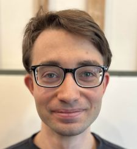

Department of Mathematics
5736 S University Ave
Chicago, IL 60637
Curriculum Vitae
I am on the postdoc market this academic year.
Research Interests
I study complex algebraic geometry and Hodge theory. My advisor is Ben Bakker.
I mainly work on Lagrangian fibrations, non-Abelian Hodge theory, and moduli spaces of Abelian varieties.
I'm also interested in K-trivial varieties, symplectic geometry, and algebraic foliations, as well as representations of groups
arising from algebraic geometry, such as the fundamental groups and Mumford—Tate groups of algebraic varieties.
Publications and preprints
- The Mumford--Tate group of a very general Lagrangian fiber
submitted.
- The monodromy of compact Lagrangian fibrations
International Mathematics Research Notices, April 2026, rnag057;
arXiv
- Recovering nodal plane curves from their bitangent lines
Undergraduate honors thesis, advised by Olivier Martin.
(pdf)
Notes and write-ups
- Notes on perverse sheaves and intersection cohomology
Brief notes I wrote up for by own comprehension while reading the
book of Hotta—Takeuchi—Tanisaki. (pdf)
- Notes on Simpson's non-Abelian Hodge correspondance
Brief notes I wrote up for my own comprehension while reading Simpson's 1992 paper.
(pdf)
Invited talks
- Special Session on Higgs Bundles, JMM, January 2027.
- GTA Philadelphia, Temple University, May 2026.
- Research Seminar, Institute for Advanced Study, November 2025.
- Graduate Student Colloquium, University of Illinois Chicago, February 2025.
Conferences attended
- GTA Philadelphia, Temple University,
May 29-31, 2026
- GSCC 2026, University of Illinois Chicago,
March 27-29, 2026
- Abelian Varieties and their Moduli,
Universitat de Barcelona, February 3-6, 2026.
- Workshop on Moduli of Curves,
University of Illinois Urbana Champaign, September 20-21, 2025.
- SRI 2025,
Colorado State University, July 14-18, 2025.
- CMND 2025,
University of Notre Dame, June 2-20, 2025.
- JMM 2023,
Boston, January 4-7, 2023.
- MAGNTS 2022,
University of Illinois Chicago, October 22-23, 2022.
Organization and service
- Co-organized Graduate Algebraic Geometry Seminar (GAGS): Fall 2025, Spring 2026
- Judged for QED Competition (Math Circles of Chicago): Fall 2025
- Organized Weil Conjectures Reading Group: Fall 2025
- Organized Lie Groups Seminar: Fall 2024
Teaching
Univeristy of Chicago:
UIC:
- Math 181: Calculus II (TA); Spring 2026
- Math 160: Finite Math (TA); Fall 2022, Fall 2023, Fall 2024, Spring 2024
Awards and Grants
- Bernard Kurtin Award for Outstanding Research in Mathematics and Physics, UIC MSCS Department, 2025-2026
- UIC RTG Grant: Spring/Summer 2023, Spring/Summer 2024, Summer/Fall 2025, Summer 2026
- Kuga-Sah Award for Excellance in Mathematics, SBU Mathematics Department, 2022